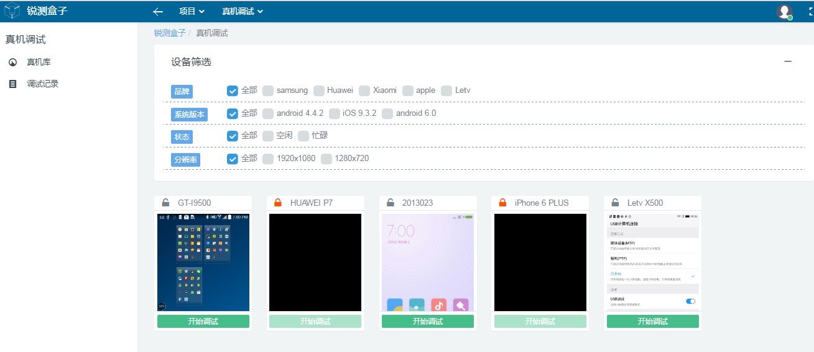

1.5 真机调试
用户通过使用真机调试功能远程操作真实设备。在真机调试中，用户通过鼠标操作实现对设备的控制和调试。用户使用真机调试能更好的复现测试步骤，观察测试结果，从而更加精确的追踪错误位置。如下图所示。

项目的真机调试管理页面图
用户通过使用真机调试功能远程操作真实设备。在真机调试中，用户通过鼠标操作实现对设备的控制和调试。用户使用真机调试能更好的复现测试步骤，观察测试结果，从而更加精确的追踪错误位置。如下图所示。
项目的真机调试管理页面图